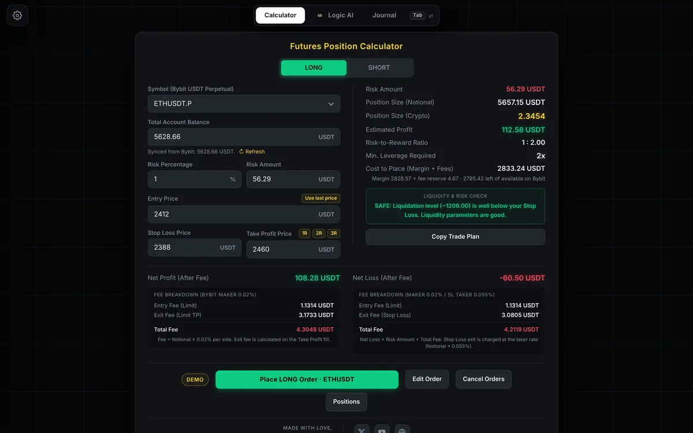
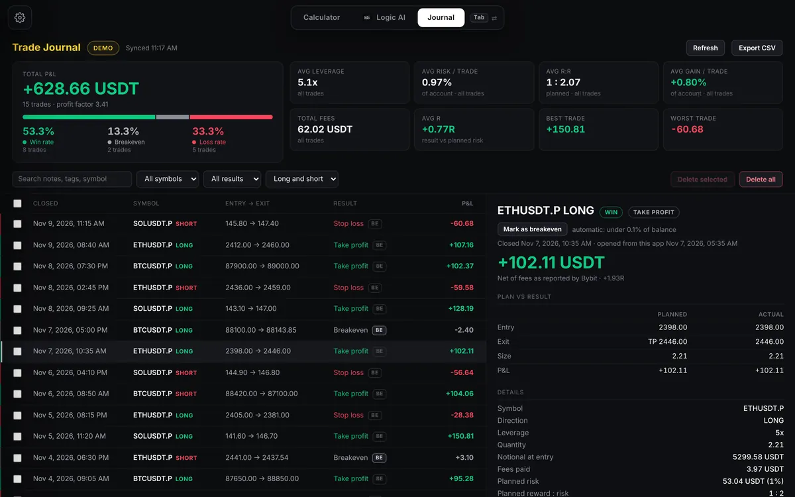
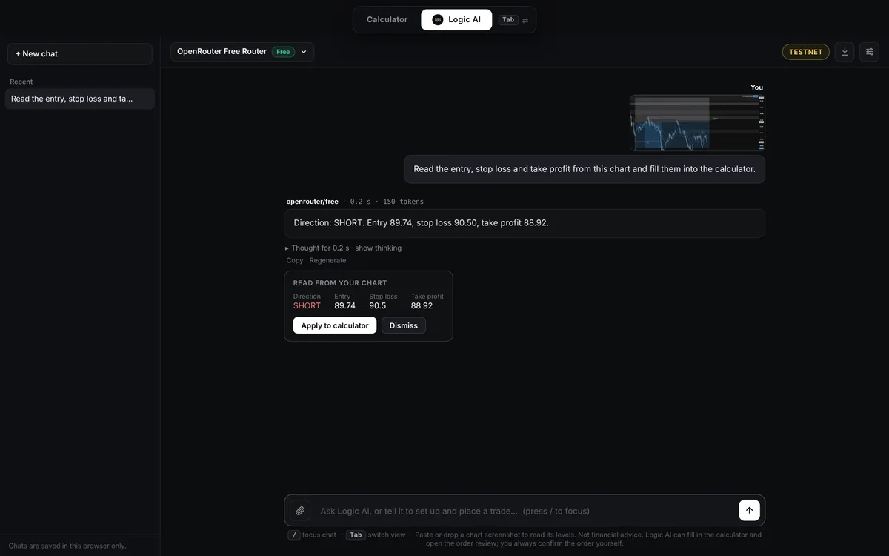
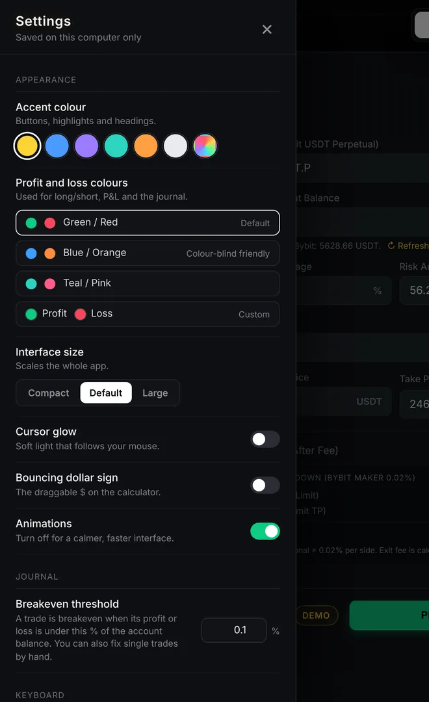

Trading is fast.
Be faster.
Logilator turns your entry, stop loss and risk percentage into an exact position size in seconds, so you can get your limit order in before the price reaches it. It shows what the fees do to the result, places the order from your own computer, and journals every trade when it closes. Your keys never leave your PC.
Windows / runs locally / demo and testnet supported

From levels to a journaled trade, in half a minute.
Enter your risk and levels, review the order, and see how the journal and settings look. Recorded on a Bybit demo account with sample data.
The video couldn't be played in this browser. Download the demo (MP4) or open it in Chrome, Edge or Firefox.
The maths you do before every trade, done once, correctly.
Position size is not a feeling. It is your risk amount divided by the distance to your stop. Logilator does that, then keeps going: leverage, fees, reward-to-risk and what you actually keep.
- Balance
- 1,000.00 USDT
- Risk
- 1% = 10.00 USDT
- Entry / Stop / Target
- 2000 / 1900 / 2200
- Position size
- 0.1000 ETH
- Notional
- 200.00 USDT
- Minimum leverage
- 1x
- Reward : risk
- 1 : 2.00
- Net profit after fees
- +19.84 USDT
- Net loss after fees
- −10.14 USDT
0.1 ETH. Fees: 0.02% maker on entry and take profit, 0.055% taker when the stop is hit. Sample inputs; edit the fee rates in your settings if you have a VIP tier.Risk-based sizing
Set balance and risk percentage. Get size in coins and in USDT, matched to your stop loss.
Leverage and liquidation
The lowest leverage that can afford the position, checked against your liquidation level.
Fees included
Entry and exit fees on both outcomes, so you see net profit and net loss, not the flattering gross figures.
Place, edit, cancel
Limit entry with stop loss and take profit attached. Edit or cancel open orders from the same screen.
Live positions
Open positions with live unrealised profit and loss, and partial or full close at market.
Every trade recorded, without lifting a finger.
When a trade closes, it appears in your journal with the plan you reviewed next to what actually happened. Then you add what you learned. Win rate, breakeven rate, loss rate, average leverage, average risk and average reward-to-risk are always one glance away.

Describe the trade. Or show it.
A chat page built into Logilator, powered by OpenRouter. Type what you want, or paste a screenshot of your long/short tool and it reads the levels off the price axis.
- Reads entry, stop loss and take profit from a chart screenshot, then waits for your click before applying
- Switches long and short and fills your levels from plain language
- Opens the order review for you. You press the final confirm
- Free models by default, any OpenRouter model if you choose
- Shows which model answered, how long it took and the tokens used
Accuracy depends on the model. Free vision models read price labels less reliably than paid ones, so compare the result with your chart before applying.


Your tool, your colours.
Open Settings from the gear and make it yours. Preferences stay on your computer and never change how orders are placed or checked.
- Accent colour presets, or pick any colour you like
- Profit and loss colours, including a colour-blind friendly blue and orange
- Compact, default or large interface
- Cursor glow, animations and the bouncing dollar on or off
- Breakeven threshold for your journal
- Keyboard shortcuts: Tab cycles Calculator, Logic AI and Journal; “/” jumps to the AI chat
From download to first order in minutes.
Unzip and start
Extract the folder anywhere on a Windows PC with Node.js installed, then double-click the start file.
Add your own keys
Paste your Bybit API key into the settings file. Add an OpenRouter key for Logic AI. Begin on demo or testnet.
Calculate and confirm
Enter your levels, read the order review, confirm. The order goes from your PC straight to Bybit.
Software that can place orders should be careful.
We recommend a Bybit API key with trading permission only, never withdrawal, restricted to your IP address where possible. The setup guide shows how.
What it runs on, and what it doesn't.
Clear limits up front, so you know before you buy.
| Item | Support |
|---|---|
| Exchange | Bybit (live, Demo Trading and testnet). Other exchanges are not supported. |
| Markets | USDT perpetuals: ETHUSDT, BTCUSDT and SOLUSDT. |
| Computer | Windows 10 and 11, with Node.js installed. Built and tested on Windows 11. macOS and Linux are not tested or supported. |
| Account setup | Isolated margin and one-way position mode. The app checks both and refuses to trade otherwise. |
| Logic AI | Optional. Needs your own OpenRouter key. Free models have daily limits. |
| Internet | Needed to reach Bybit (and OpenRouter if you use the AI). The calculator itself runs on your PC. |
Buy once. Run it yourself.
One payment, no subscription. It runs on your computer and uses your own accounts.
- Calculator for ETH, BTC and SOL USDT perpetuals
- Order placement, editing, cancelling and live positions
- Automatic trade journal with statistics
- Logic AI with chart screenshot reading
- Customisable colours and settings
- Setup guide and help from the developer
7-day refund. If you can't get Logilator running on your setup, you'll get your money back. See the terms.
You pay in USDT on the Tron network (TRC20). The download is sent once your payment is confirmed. How paying works
Requires Windows, Node.js, and your own Bybit account and API key. OpenRouter key optional.
Common questions.
How do I pay, and when do I get it?
Payment is in USDT on the Tron (TRC20) network. The payment page shows the amount and address. Send the exact amount, then message the transaction ID by email or on X. After the payment is checked on the blockchain, the download link is sent to you, usually within 24 hours.
Will this make me profitable?
No tool can promise that. Logilator helps you size positions and manage risk consistently, and the journal helps you see what is and isn't working. Results depend on your strategy, discipline and the market.
Is my Bybit API key safe?
It is stored in a file on your own computer and used only by the app running there. It is never uploaded or shown to the AI. Create a key with trading permission only, never withdrawals, and restrict it to your IP address where you can.
Do I need to know how to code?
No. Install Node.js once, unzip the folder, paste your keys into the settings file and double-click the start file. The setup guide walks through every step.
Can I try it without risking real money?
Yes. Logilator works with Bybit Demo Trading and the Bybit testnet, and it has a dry-run mode that checks everything and shows the order without sending it. Start there.
Where is my trade journal stored?
In a single file on your own computer, next to the app. Nothing is uploaded. Trades are kept until you delete them, and you can export them to CSV at any time.
What does Logic AI cost?
You bring your own OpenRouter key. Free models cost nothing but have daily limits. Paid models and the Auto router bill your own OpenRouter credits, and the app asks before using them.
How accurate is the screenshot reading?
It depends on the model. Stronger models read price labels more reliably than free ones. The levels are shown first and only applied when you click, so you can check them against your chart.
Which markets and computers are supported?
Bybit USDT perpetuals ETHUSDT, BTCUSDT and SOLUSDT, on live accounts as well as Bybit demo trading and testnet. It is built and tested on Windows 10 and 11. Other operating systems are not supported.
What if Bybit changes something?
Bybit can change its systems, and I can't control that. If something stops working because of a change on Bybit's side, tell me and I'll look into it. See the terms for what is and isn't covered.
Can I use it on more than one computer, or share it?
The licence is for your own personal use. Please don't share, resell or redistribute it. Details are in the terms.
How do I get help?
Message @itsmelogith on X, or visit the support page, and you will get help with setup.
Calculate it. Today.
Start on a demo account, check every number, and move to live only when you are ready.